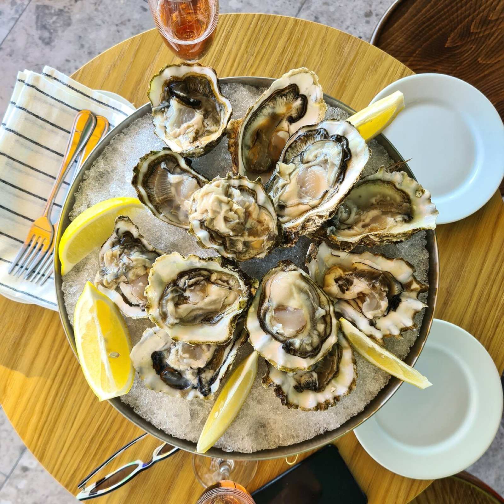
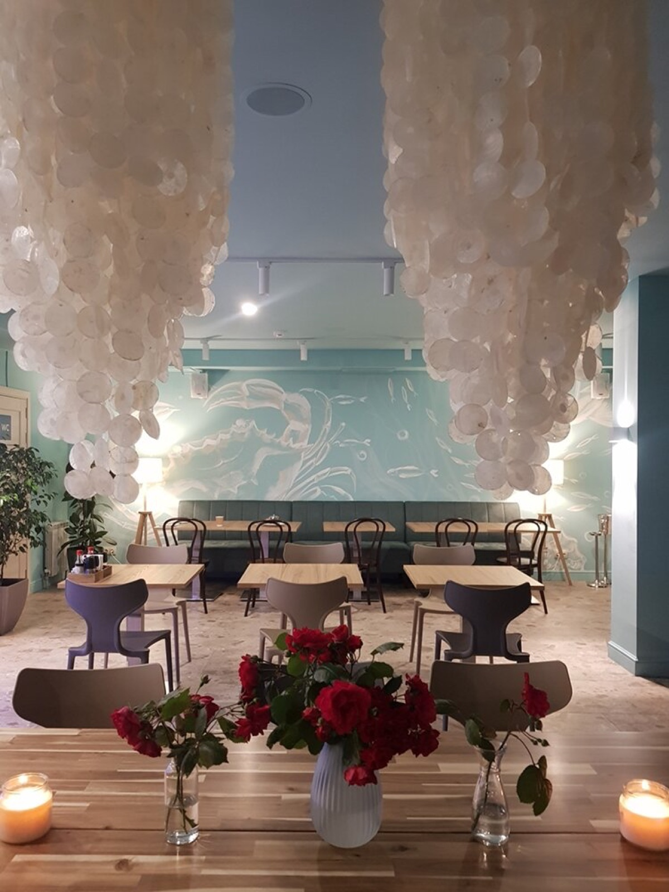
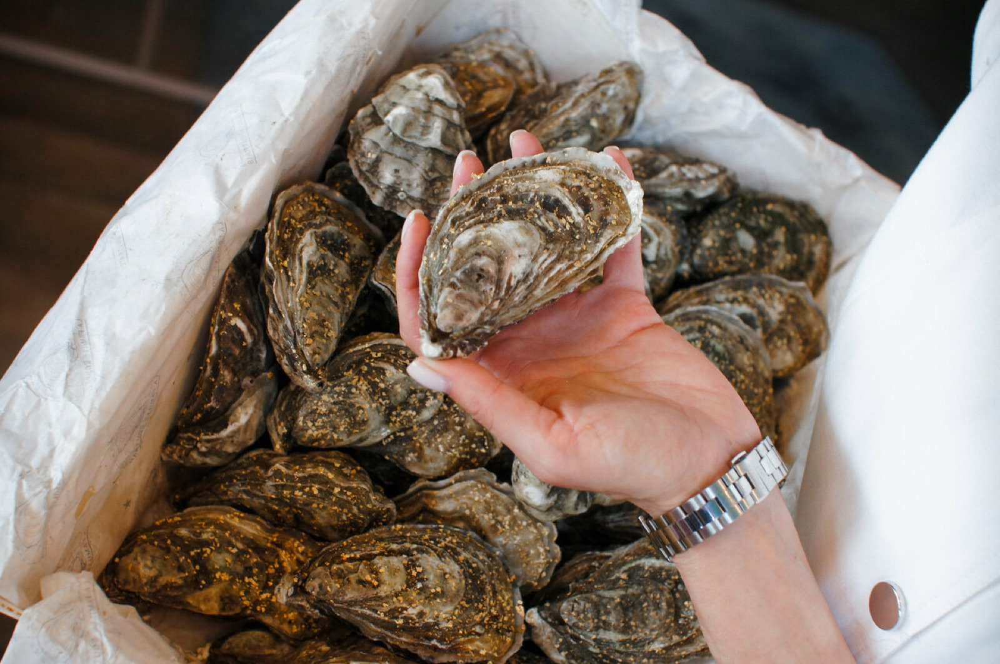
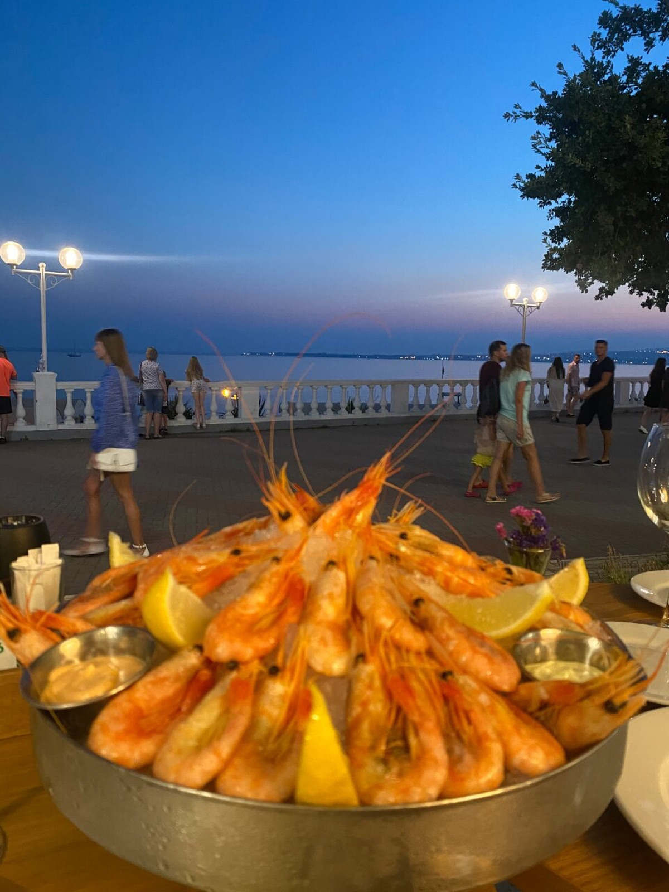

Rony Oyster вырос из маленькой устричной лавки у набережной: сначала — раковины на льду навынос, потом несколько столиков, а теперь — полноценный ресторан с террасой над бухтой и собственным баром.
Правило с первого дня не поменялось: морепродукт должен быть живым до момента подачи. Поэтому в зале стоит витрина со льдом, а меню зависит от того, что привезли утром.


Интерьер собран вокруг моря: бирюзовые стены с росписью, люстры-раковины, открытая витрина. Летом главная сцена — терраса: столики над бульваром, вид на бухту и закаты, которые гости снимают чаще, чем еду.

